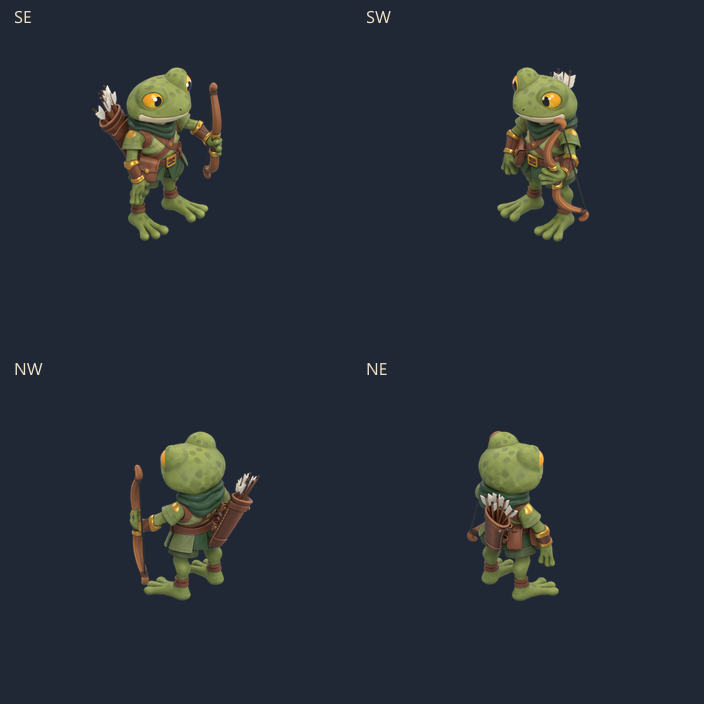

Batrafian — chute et mort
Les genoux cèdent, l’arc tombe, puis les bras amortissent la chute vers l’avant. Le torse reste au sol, avec la tête tournée. Dix poses entières, quatre directions isométriques ; aucune reconstruction du corps en 2D.
Vitesse normale · 650 ms

La revue répète après une pause. Dans Godot, le corps reste au sol jusqu’à une relance explicite.
Ralenti · 0,5×
Pose finale
Les dix poses
Scène isolée : Replay fall, Pause, Next frame, vitesses et Repeat. 303 contrôles Godot réussis sur trois tailles d’écran. Quatre atlas : environ 1,47 Mo de PNG. Les yeux restent ceux du modèle fourni, sans paupières articulées. Pas encore intégré aux raids ; aucun APK généré.